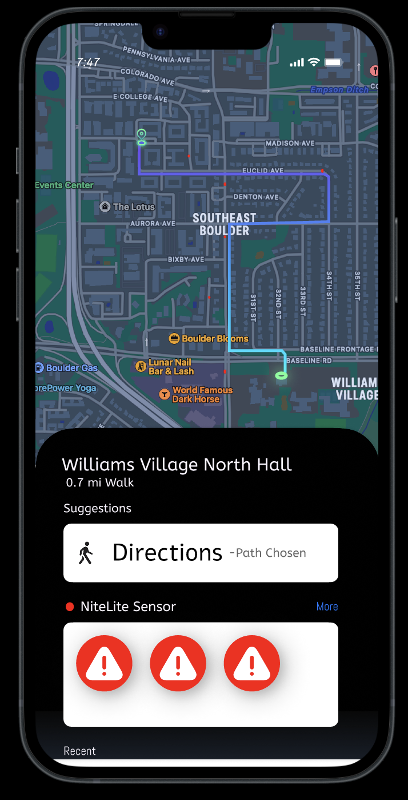

NiteLite Hackathon Project
 NiteLite was an innovative Hackathon project aimed at enhancing pedestrian safety and comfort through nightime walks. This project aimed to offer users optimized routes that priortize well-lit and secure pathways by utilizing smart technologies and data-driven insights. These insights would be based on alerts in the past.
The devlopment of NiteLite involved the combination of hardware and software components. We utilized Tinkercad and SolidWorks for modeling the product's design and its integration within urban environments. I was responsible for the product's integration with the enviorment which involved programming an arduino in C++ to control the lights and sensors. Additionally, Figma was used to prototype the accompanying mobile application, providing users with a visual representation of NiteLite's functionality.
If you want more details and a chance to play around with the project, click the link below!